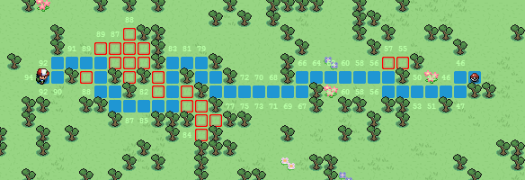

Andre Haas is a student at UC Berkeley studying Electrical Engineering and Computer Science. He is searching for an internship in a computer-science related field from which to apply and grow his programming and development skill set.
Education
-
University of California, Berkeley August 2012 – May 2016 (Expected)
Bachelor of Science in Electrical Engineering & Computer Science
Expected Graduation: Spring of 2016
- CS 61A: Structure and Interpretation of Computer Programs - A+
- CS 61C: Machine Structures - A
- CS 70: Discrete Mathematics and Probability Theory - A
- EE 20: Systems and Signals - A-
Currently enrolled:
- CS 161: Computer Security
- CS 170: Efficient Algorithms and Intracatble Problems
- CS 188: Artifical Intelligence
GPA: 3.81
- Westview High School 2008 – 2012
- AP Computer Science AB
- AP Chemistry
- AP Calculus AB
- AP Calculus BC
- AP Physics C: E&M + Mech
- AP Biology
- AP Chinese
- AP U.S. Government
GPA: 4.18 - Grade of ‘A’ and AP test score of ‘5’ (extremely well qualified) attained in all AP classes and exams.
Skills
- Administrating dedicated servers for web and gaming applications
- Installing and configuring Apache and Nginx webservers
- Inventing and implementing algorithms for physical problems
- Programming in Javascript, Python, Objective C, Java, MATLAB, PHP, and Lua
- Creating SQL database schemas
- Developing for iOS using Xcode
- Planning and building desktop computers
- Creating automated payment systems using Paypal Instant Payment Notification
- Other skills: Conversational Chinese and German
- Adept at learning new skills
Experience
- Blast Motion Software May to September 2013
- Designed and implemented algorithms to analyze raw sensor data for error and other metrics
- Built web-based 3D visualizer to demonstrate product's accuracy and utility to clients
- SONY Electronics Software QA Intern June to August 2011
- Worked closely with a small team of developers working on a new web product
- Performed quality assurance in close collaboration with a software engineer
Projects
- SN1PE Gaming Community 2007 to 2013
- Hosted through dedicated Ubuntu 12.04 LTS server, previously Windows 2003 & 2008 in the past
- Maintained community websites
(blog)
(forums)
(donations)
- Managed Source gameservers for Garry's Mod
- Video editing
- Adobe After Effects video production
- Motion graphic examples:
(1)
(2)
(3)
Extra-curricular Activities
- 2013-2014
- Backend developer for Turing Test Tournament, a project sponsored by the Berkeley Center for New Media
-
MongoDB, Node.js, Express
- 2012-2013
- Member of Eta Kappa Nu (HKN), the national Electrical and Computer Engineering honor society
- Provided services to fellow EECS students, e.g. administering course surveys
- Chinese Student Assocation Webmaster
- eSports@Berkeley committee member for Dota 2 (club website)
2011-2012
- Competed in Cyberpatriot competition as a varsity Cybersecurity Club team member
- Assisted local YMCA membership marketing director for over 60 hours
- Teen Korps Volunteering Club: packaged food, participated in game nights with the autistic, renovated hostel
A* Pathfinding
An interactive demonstration of the famous pathfinding algorithm.
Implemented with Javascript and HTML5 (Canvas).
|
 |